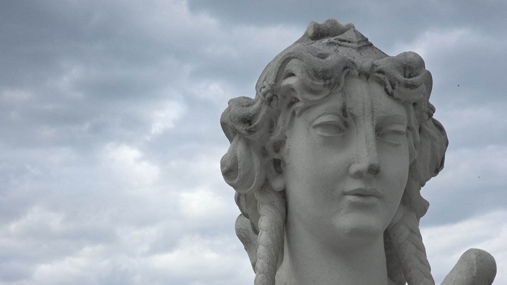

Journey 04 · Wien Note 4 of 8 Stories of
Stories of Vienna: Once Upon a War

Es wurde einmal gesagt, it was once said, that the famous white horses of Vienna were almost lost.
To understand how, you have to understand the world they lived in when this story begins. It was 1938, and Austria had fallen. Not in battle, where brave men could fight openly and the lines were clearly drawn, but in the way that things sometimes fall, first little by little, then suddenly all at once, absorbed into something larger and darker than itself. The ancient school of horsemanship, with its centuries of knowledge and its irreplaceable horses, was now under the authority of the Third Reich.
And the Third Reich had plans.
A Kingdom of Horses
The man they put in charge of the horses was Gustav Rau, a hippologist, a true horseman, and a true believer. He understood horses deeply enough to see in them what others missed. And what he saw, he wanted to control and perfect. The Reich wanted a master race of men. Rau would give them a master race of horses to match. He took over the famous breeding farms. He took over the bloodlines. He gathered nearly every Lipizzaner in the world onto his rolling green hills. He added to them some of the last remaining Polish Arabians – proud, spirited horses with arching necks and dancing gaits. No comfort was spared for these horses. Roomy rail cars. Large clean stables. Attentive staff, many of whom had traveled with the horses not out of loyalty to the program, but out of devotion to the animals themselves.
For a while, standing at his window watching his horses graze, Rau must have believed he had everything he needed.
The Fall of the Kingdom
But cruelty on the scale of the Third Reich is never unanswered. The war that had seemed so certain began to turn. From the west, the Allied forces advanced. From the south, countries once secured began to rise. And from the east came the Red Army: Vast, unstoppable, and desperately, endlessly hungry. They did not share Rau’s reverence for horseflesh. To a starving army, a horse was meat, regardless of its pedigree. The program was abandoned. The dream of the perfect horse dissolved into the larger nightmare of a war that was finally, brutally, ending.
But the horse trainers… remember them? The ones who had traveled from their occupied countries, leaving everything behind, all to stay close to horses that were more than animals to them – cultural icons, living history, the last surviving proof of something worth preserving? They had not forgotten why they came. And they knew, with a certainty that needed no orders, that the horses had to be saved.
They knew what was coming from the east. They had very little time.
But the horsemen had heard rumors of an American army moving through the region. They had one advantage: a veterinarian who spoke English. They sent him alone, across uncertain ground in the dark night, to find the Americans and make their case.
He found them. And by what you might call fate, or luck, or the particular magic of this story, the men he found were not just soldiers. Colonel Hank Reed had spent his life on horseback. And the general whose approval he needed – George S. Patton- had represented the United States in the modern pentathlon at the 1912 Olympics, which included equestrian events. These were men who did not need the value of the horses explained to them. They already knew.
The ask was simple. The risk was considerable. And they said yes. What followed was, by any measure, a remarkable thing.
Under the cover of the American operation, the horsemen moved their charges carefully, at night whenever possible, hiding irreplaceable horses from the bombs, planes, and armies all closing in. Pregnant mares, foals, and stallions that had never known anything but the careful, patient hands of men who had dedicated their lives to them.
The roads were not kind. Some horses were lost to the chaos of a world coming apart at its seams, stolen by desperate refugees fleeing their own nightmares, or simply swallowed by the disorder of a war that had no regard for what was precious. Some did not make it. The journey asked for everything the horsemen had, and then asked for a little more.
But they knew their horses, and they had always known their horses. And that knowledge – ancient, embodied, passed down through generations of instruction and patient repetition – was exactly what they needed. Enough would make it out.
A Different Kind of Loss
And so the horses were saved.
It is the kind of ending that should feel complete. The villain defeated, the treasure rescued, the brave men vindicated. In another kind of story, it would end there, with the horses safe and the curtain falling on a moment of hard won triumph. And they all lived happily ever after, Friede, Freude, Eierkuchen.
But this is a true story. And true stories rarely end where we want them to.
The finest of the rescued Arabians and Lipizzaners boarded a troop ship and crossed the ocean to America, bound for the last remaining U.S. Army horse breeding facility. They arrived with their bloodlines intact, their lineage carefully documented and certified before they ever left European soil. Everything that made them extraordinary had been written down, verified, and preserved thru blood and sacrifice. They carried their history with them.
But that history did not travel well.
The American horsemen who received them spoke a different language entirely. Here, the Quarter Horse was king. The Thoroughbred royalty. These new arrivals, who were spirited, reactive, and built for a different kind of excellence, were met with suspicion. The European certifications that had been so painstakingly preserved were dismissed by the very organizations whose approval would have made these horses valuable. If it was not certified by American standards, it did not count. And so, horses whose bloodlines stretched back centuries were declared, with the stroke of a pen, worthless.
And then, not long after, the army stopped needing horses at all.
The last breeding program was handed over to the Department of Agriculture, which had not asked for it and did not want it. Decisions were made, and the horses were disposed in the way unwanted things are always disposed of, with practically and without ceremony.
Some horses were euthanized. Others sold at auction to whoever would have them. The Lipizzaner’s, those famous white dancers of Vienna, were so unknown in America that there was no one to even argue for them. The Polish Arabians, perhaps the most storied breed in all of Europe, were treated as curiosities at best.
They had survived a war. They had survived a villain’s obsession and a starving army and roads that asked everything of the men who loved them. But in the end, it was indifference and paperwork that nearly finished what the war could not.
It is a particular kind of tragedy, that last one. To survive everything, and then be lost to indifference.
An Unlikely Hero
And so the horses were safe from the war, but unseen in their new home. Once proud and cherished, they were unknown and unremarkable to the eyes that looked at them without knowing what they were looking at.
And then a boy fell in love with a horse.
Not a real boy, and not a real horse, but the feeling was real enough. In 1941, a young writer named Walter Farley published a story about a shipwrecked boy and a wild black Arabian stallion, stranded together on a deserted island, learning to trust each other against all odds. The horse was enormous, fierce, untameable by anyone but the boy who had earned his trust. He was spirited, reactive and difficult. Everything the American market had decided was a liability in a horse.
Girls and boys across America read The Black Stallion and something changed for them. The wildness they had been told was a flaw became the thing they loved most. The proud arching neck, the dancing gait, the fire in the eyes – suddenly these were not warning signs, but sought after characteristics. A generation of horse-crazy children grew up dreaming of exactly the kind of horse that had been sold at auction for next to nothing just a few years before. The Polish Arabian and the Lipizzaner had found their place in the American landscape.
The cultural ground shifted. First little by little, then suddenly all at once… the way things sometimes do.
I know this, because I was one of those children. I read Walter Farley’s books until the spines cracked and the pages softened. I dreamed of a horse like the Black Stallion, wild and magnificent and somehow, impossibly, mine. And later I dreamed of a white horse that danced and leapt into the air, as if it were flying. I did not know then that I was part of a larger story, one that stretched back through a war and a secret mission and centuries of careful breeding to a riding school in Vienna. But that, as they say, is another story entirely.
The Spanish Riding School reopened after the war. The Lipizzaner stallions returned to their baroque hall, to the chandeliers and the sand-covered floor and the classical music and the riders who had given their lives to learning what could not be written down. The Polish Arabian breed, once nearly extinguished, found its advocates at last in the hearts of children who had fallen in love with a fictional horse and gone looking for the real thing. From only 59 mares and 8 stallions, the Polish horsemen were able to rebuild the breed to its current reputation as some of the finest horses in the world.
And the white horses dance still.
Und wenn sie nicht gestorben sind, dann leben sie noch heute.
And if they haven’t died, then they are still living today.
Mentioned in
Originally published at fieldnotesfromabroad.com/2026/04/13/stories-of-vienna-once-upon-a-war/